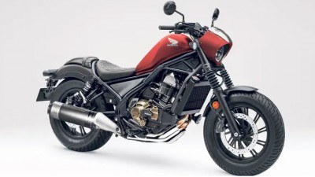

SJ GARAGE
BUY-SELL HIGH QUALITY BIGBIKE
BUY-SELL HIGH QUALITY BIGBIKE

S1000XR was officially launched by BMW Motorrad on Monday (27/4) yesterday. The motorbike, which was first introduced in the 2019 EICMA event, entered the adventurous motorcycle segment. However, the heart of this motorbike is a sport engine derived from the BMW S1000RR. Joe Frans as CEO of BMW Motorrad Indonesia said, the S1000XR would be very suitable for large motorists. Especially for those who often travel long distances or touring. Sport motorized motorbike and touring motor comfort.
Read more →

Kawasaki Ninja ZX-25R is planned to be launched on 4 April 2020 yesterday. However, due to an outbreak that was sweeping Indonesia and various parts of the world, its launch was postponed. Until now, the motorbike that has been much awaited by motor sport lovers has not been published. Even so, PT Kawasaki Motor Indonesia is not rational to tempt the enthusiasts of the Ninja ZX-25R. From his Youtube channel, the green manufacturer is giving dyno run impressions of the 250 cc four-cylinder motorbike. But instead of showing the dyno results, the Kawasaki Indonesia video only showed off the engine's shrill sound at high rpm.
Read more →
Honda is being gossiped about by many new motorbikes being developed. One model that is quite widely discussed is the 1,100 cc Honda Rebel. Reportedly this one model will use the engine base of the latest Africa Twin. Reported from GreatBiker, until now the Honda Rebel is only marketed in 500 cc engines only. With a cruiser and retro style, of course this is very similar to Harley-Davidson motorcycles.
Read more →